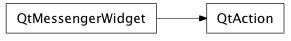

Bases: enaml.widgets.messenger_widget.MessengerWidget
A non visible widget used in a ToolBar or Menu.
An Action represents an actionable item in a ToolBar or a Menu. Though an Action itself is a non-visible component, it will be rendered in an appropriate fashion for the location where it is used.
The text label associate with the action.
The tool tip text to use for this action. Typically displayed as a small label when the user hovers over the action.
The text that is displayed in the status bar when the user hovers over the action.
The an icon to display with this action when appropriate, such as when the action is a member of a menu or a toolbar. Whether or not the action can be checked.
Whether or not the action is checked. This value only has meaning if ‘checkable’ is set to True.
Whether or not the item representing the action is enabled.
Whether or not the item representing the action is visible.
Whether or not the action should be treated as a separator. If this value is True, none of the other values have meaning.
An event fired when the action is triggered by user interaction.
An event fired when a checkable action changes its checked state.
alias of __NoInterface__

Bases: enaml.qt.qt_messenger_widget.QtMessengerWidget
A Qt implementation of an Enaml Action.